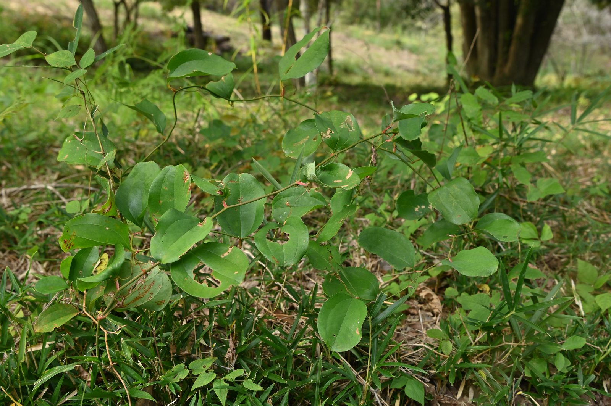
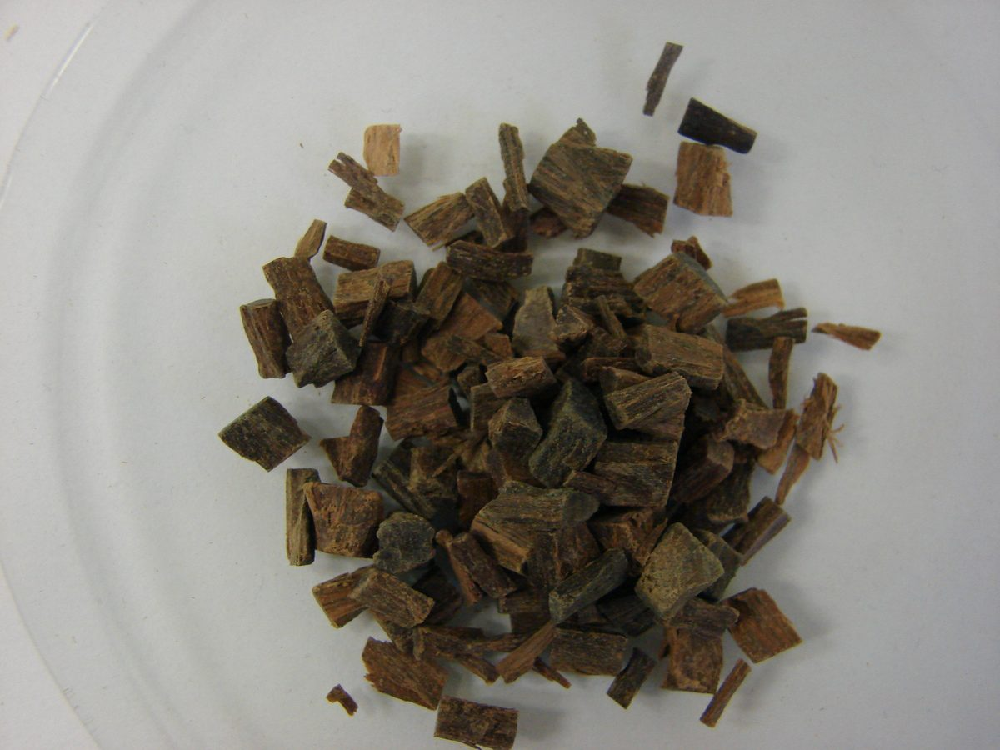
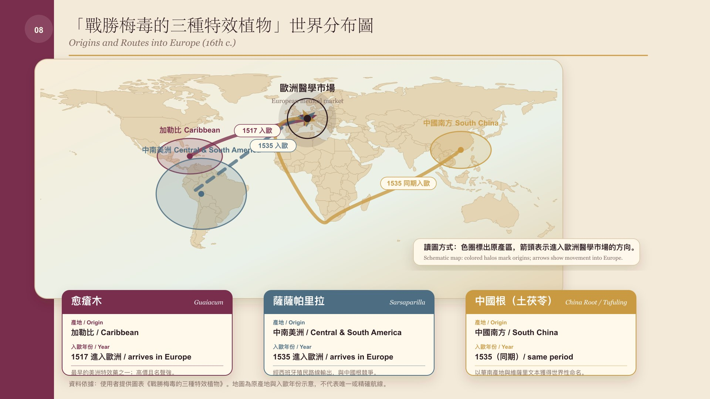
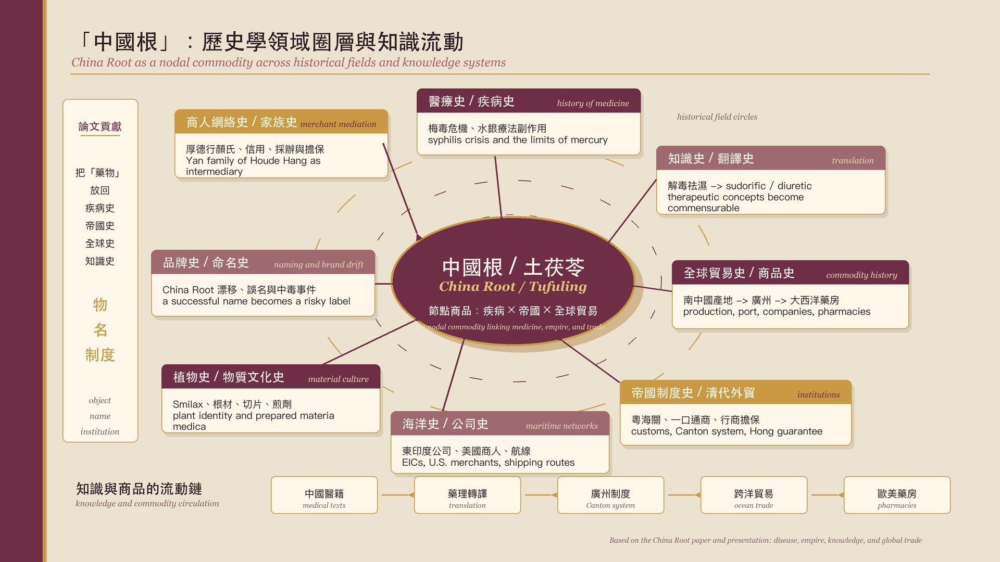
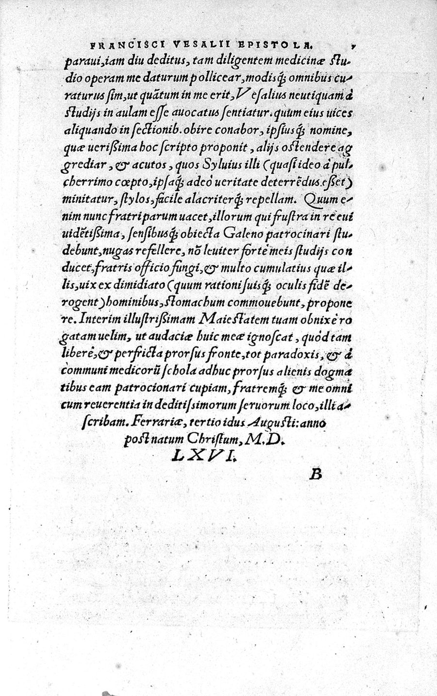

Sino-Swedish Trade in the Qing Dynasty: A Case Study of the Canton Port (1735–1813)
Doctoral Dissertation · 2024 – Present
My doctoral research at the Macau University of Science and Technology examines the commercial relationship between Sweden and Qing China through the lens of the Canton Port. Drawing on the archives of the Swedish East India Company (SOIC), Qing customs records, and local gazetteers, this project reconstructs the commodity flows, merchant networks, and institutional frameworks that shaped Sino-Swedish exchange during the long eighteenth century.
Core Research Questions
1. How did the Swedish East India Company operate within the Canton system, and what distinguished its commercial strategies from those of its British, Dutch, and French counterparts?
2. What commodities — beyond tea and porcelain — circulated through the Canton–Gothenburg route, and what were their cultural and economic impacts on both ends?
3. How did Qing merchant networks (particularly the Thirteen Hongs) and Swedish traders negotiate the institutional constraints of the Canton trade?
Sino-Swedish Trade Canton Port Swedish East India Company Thirteen Hongs Qing Dynasty
Did China Root 'Bloom All Over the World'? — Smilax Glabra in Empire, Disease, and Global Trade (1644–1842)
Forthcoming in Journal of Macau History Studies
This project investigates the transnational circulation of tufuling (Smilax glabra, known in Europe as Radix Chinae or "China root") as a medicinal commodity in early modern global trade. Against the backdrop of a world ravaged by syphilis, European East India Companies turned to this medicinal root from southern China, introducing it into global markets via transoceanic routes.


The study draws on three categories of primary sources: official Qing archives and customs regulations; European East India Company archives (procurement records, medicinal cargo lists, ships' journals); and Ming-Qing medical literature, read alongside European pharmacopoeias. It demonstrates how syphilis became a major driver of global medicinal circulation, reveals China root's distinctive export patterns under the Canton system, and foregrounds the intermediary role of the Thirteen Hongs in mediating between imperial institutions and global demand.


Global Medical History China Root Syphilis Qing Trade East India Companies
Material Approaches to Late Imperial and Modern Chinese History
Visiting Scholar Project · 2026 – Present · UCLA
As a Visiting Scholar in the UCLA Department of History, I am developing material-culture approaches to the study of late imperial and modern China. This research focuses on three categories of objects: scholar's studio objects (wenfang), devotional objects, and books as material things — examining how these artifacts mediated social, intellectual, and commercial relationships.
Material Culture Late Imperial China Scholar's Studio Book History
Ming-Qing Syphilis Medical Literature & Other Projects
Ongoing

Additional ongoing research includes a systematic survey of Ming-Qing medical texts dealing with yangmei chuang (楊梅瘡, syphilis); a study of Zheng Guanying and the Guangdong Anti-Treaty Society's resistance to the American Chinese Exclusion Act; martial arts and charity performances in 1954 Macau; and Sino-foreign exchanges reflected in Pu Songling's Strange Stories from a Chinese Studio.
History Research OS: AI-Native Workflow for Historians
Open-Source Digital Humanities Tool
I am developing History Research OS, an open-source workflow for historians and humanities researchers who want to connect literature discovery, source triage, Obsidian notes, evidence mapping, and argument building. The project adapts an AI-assisted paper-reading system toward historical research, with templates for Qing/Canton trade, global material culture, Sino-Western exchange, and digital humanities.
The aim is methodological as much as technical: to ask what an AI-native research environment might look like when built around historical questions, source criticism, archival leads, and evidence-backed writing rather than only around paper summaries.
Digital Humanities AI for Historians Obsidian Workflow Open Source